전기기능장 (2016-04-02 기출문제)
1과목: 임의구분
1. 고압 보안공사에서 전선을 경동선으로 사용하는 경우 지름 몇 ㎜ 이상의 것을 사용하여야 하는지 그 기준으로 옳은 것은?
- 8
- 6
- 5
- 3
(정답률: 73%)

2. 제 2종 접지공사에 사용하는 접지선을 사람이 접촉할 우려가 있는 곳에 시설하는 경우, 접지극을 지중에서 철주 또는 기타의 금속체로부터 몇 ㎝ 이상 떼어서 매설하여야 하는가?
- 80
- 100
- 125
- 150
(정답률: 89%)
3. 그림과 같은 회로에서 전류 I(A)는?
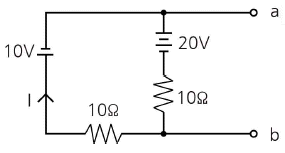
- -0.5
- -1.0
- -1.5
- -2.0
(정답률: 78%)
4. 일반 변전소 또는 이에 준하는 곳의 주요 변압기에 시설하여야 하는 계측장치로 옳은 것은?
- 전류, 전력, 주파수
- 전압, 주파수 또는 역률
- 전력, 주파수 또는 역률
- 전압, 전류 또는 전력
(정답률: 90%)
5. 교류와 직류 양쪽 모두에 사용 가능한 전동기는?
- 단상 분권 정류자 전동기
- 단상 반발 전동기
- 세이딩 코일형 전동기
- 단상 직권 정류자 전동기
(정답률: 83%)
6. 송전단 전압 66kV, 수전단 전압 61kV인 송전선로에서 수전단의 부하를 끊은 경우의 수전단 전압이 63kV이면 전압변동률은 약 몇 % 인가?
- 2.8
- 3.3
- 4.8
- 8.2
(정답률: 78%)
7. 동기 전동기를 무부하로 하였을 때, 계자전류를 조정하면 동기기는 L과 C소자와 같이 작동하고 계자전류를 어떤 일정 값 이하의 범위에서 가감하면 가변 리액턴스가 되고, 어떤 일정값이상에서 가감하면 가변 커패시턴스로 작동한다 이와 같은 목적으로 사용되는 것은?
- 변압기
- 균압환
- 제동권선
- 동기조상기
(정답률: 90%)
8. 단권 변압기에 대한 설명이다. 틀린 것은?
- 3상에는 사용할 수 없다는 단점이 있다.
- 1차 권선과 2차 권선의 일부가 공통으로 되어 있다.
- 동일 출력에 대하여 사용 재료 및 손실이 적고 효율이 높다.
- 단권 변압기는 권선비가 1에 가까울수록 보통 변압기에 비해 유리하다.
(정답률: 88%)
9. JK FF에서 현재상태의 출력 Qn을 1로 하고, J입력에 0, K입력에 0을 클럭펄스 CP에 rising edge의 신호를 가하게 되면 다음 상태의 출력 Qn+1은 무엇이 되는가?
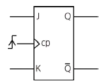
- 1
- 0
- X
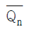
(정답률: 66%)
10. 합성수지몰드공사에 사용하는 몰드 홈의 폭과 깊이는 몇 ㎝ 이하가 되어야 하는가? (단, 두께는 1.2㎜ 이상이다.)
- 1.5
- 2.5
- 3.5
- 4.5
(정답률: 73%)
11. 3상 유도전동기의 2차 입력, 2차 동손 및 슬립을 각각 P2, P2c, s라 하면 이들의 관계식은?
- s=P2c+P2
- s=P2c-P2
- s=P2c×P2
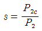
(정답률: 86%)
12. f(t)=sintcost를 라플라스변환하면?
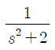
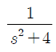
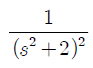
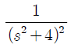
(정답률: 60%)
13. 선간거리 D(m)이고, 반지름이 r(m)인 선로의 인덕턴스 L(mH/km)은?
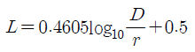
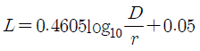
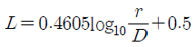
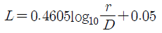
(정답률: 89%)
14. 변압기에서 여자전류를 감소시키려면?
- 접지를 한다.
- 우수한 절연물을 사용한다.
- 코일의 권회수를 증가시킨다.
- 코일의 권회수를 감소시킨다.
(정답률: 81%)
15. 역률을 개선하면 전력요금의 절감과 배전선의 손실경감, 전압강하의 감소, 설비여력의 증가 등을 기할 수 있으나, 너무 과보상하면 역효과가 나타난다. 즉, 경부하시에 콘덴서가 과대 삽입되는 경우의 결점에 해당되는 사항이 아닌 것은?
- 송전손실의 증가
- 전압변동폭의 감소
- 모선 전압의 과상승
- 고조파 왜곡의 증대
(정답률: 74%)
16. 전기설비기술기준의 판단기준에 의하여 전력용 커패시터의 뱅크용량이 15000kVA 이상인 경우에는 자동적으로 전로로부터 자동 차단하는 장치를 시설하여야 한다. 장치를 시설하여야 하는 기준으로 틀린 것은?
- 과전류가 생긴 경우에 동작하는 장치
- 과전압이 생긴 경우에 동작하는 장치
- 내부에 고장이 생긴 경우에 동작하는 장치
- 절연유의 농도변화가 있는 경우에 동작하는 장치
(정답률: 84%)
17. 그림은 동기발전기의 특성을 나타낸 곡선이다. 단락곡선은 어느 것인가? (단,Vn은 정격전압, In 정격전류, If 계자전류, Is는 단락전류이다.)
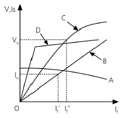
- A
- B
- C
- D
(정답률: 84%)
18. 변압기의 철손과 동손을 측정할 수 있는 시험으로 옳은 것은?
- 철손 : 무부하시험, 동손 : 단락시험
- 철손 : 부하시험, 동손 : 유도시험
- 철손 : 단락시험, 동손 : 극성시험
- 철손 : 무부하시험, 동손 : 절연내력시험
(정답률: 88%)
19. 합성수지관 공사에 의한 저압 옥내배선의 시설 기준으로 틀린 것은?
- 전선은 옥외용 비닐 절연전선을 사용할 것
- 습기가 많은 장소에 시설하는 경우 방습장치를 할 것
- 전선은 합성수지관 안에서 접속점이 없도록 할 것
- 관의 지지점간의 거리는 1.5m 이하로 할 것
(정답률: 88%)
20. 전등 및 소형기계기구의 용량합계가 25kVA, 대형 기계기구 8kVA의 학교에 있어서 간선의 전선 굵기 산정에 필요한 최대 부하는 몇 kVA 인가? (단, 학교의 수용률은 70% 이다.)
- 18.5
- 28.5
- 38.5
- 48.5
(정답률: 67%)
2과목: 임의구분
21. 다음과 같은 회로에서 저항 R이 0Ω인 것을 사용하면 무슨 문제가 발생하는가?
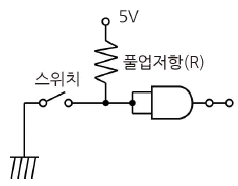
- 저항 양단의 전압이 커진다.
- 저항 양단의 전압이 작아진다.
- 낮은 전압이 인가되어 문제가 없다.
- 스위치를 ON 했을 때 회로가 단락된다.
(정답률: 91%)
22. 그림과 같은 직렬형 인버터에 대해서 L=1mH, C=8㎌일 때 출력 주파수를 1kHz로 할 경우 거의 정현파의 출력전압 파형이 얻어진다. 이 때 부하 저항 R은 몇 Ω인가?
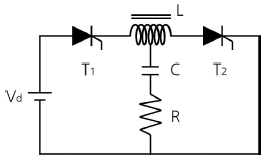
- 13.5
- 18.5
- 23.0
- 27.5
(정답률: 50%)
23. AND게이트 1개와 배타적 OR게이트 1개로 구성되는 회로는?
- 전가산기 회로
- 반가산기 회로
- 전비교기 회로
- 반비교기 회로
(정답률: 87%)
24. 3상 전류원 인버터(CSI)에 관한 설명이다. 틀린 것은?
- 입력이 3상 교류이다.
- 일종의 병렬 인버터이다.
- 출력 전류의 파형이 구형파이다.
- 입력 임피던스의 값이 클수록 좋다.
(정답률: 62%)
25. 영상 변류기(ZCT)를 사용하는 계전기는?
- OCR
- SGR
- UVR
- DFR
(정답률: 78%)
26. 10진수 74210을 3초과 코드로 표시하면?
- 101001110101
- 011101000010
- 010000010000
- 111111111111
(정답률: 70%)
27. 평균 구면 광도 100cd의 전구 5개를 지름 10m인 원형의 방에 점등할 때 이방이 평균 조도는 약 몇 lx인가? (단, 조명율은 0.5, 감광보상율은 1.5이다.)
- 24.5
- 26.7
- 32.6
- 48.2
(정답률: 64%)
28. 직류기에서 전기자 반작용을 방지하기 위한 보상권선의 전류방향은?
- 계자 전류 방향과 같다.
- 계자 전류 방향과 반대이다.
- 전기자 전류 방향과 같다.
- 전기자 전류 방향과 반대이다.
(정답률: 66%)
29. 전등회로 절연전선을 동일한 셀룰라 덕트에 넣을 경우 그 크기는 전선의 피복을 포함한 단면적의 합계가 셀룰라 덕트 단면적의 몇 % 이하가 되도록 선정하여야 하는지 기준으로 옳은 것은?
- 20
- 32
- 40
- 48
(정답률: 66%)
30. 병렬 운전 중의 A, B 두 동기 발전기에서 A발전기의 여자를 B보다 강하게 하면 A발전기는 어떻게 변화 되는가?
- π/2앞선 전류가 흐른다.
- π/2뒤진 전류가 흐른다.
- 동기화 전류가 흐른다.
- 부하 전류가 증가한다.
(정답률: 66%)
31. 코로나 방지 대책으로 적당하지 않은 것은?
- 가선 금구를 개량한다.
- 복도체 방식을 채용한다.
- 선간 거리를 증가시킨다.
- 전선의 외경을 증가시킨다.
(정답률: 76%)
32. 30 V/m인 전계 내의 50V점에서 1C의 전하를 전계 방향으로 70㎝이동한 경우 그 점의 전위는 몇 V인가?
- 71
- 29
- 21
- 19
(정답률: 58%)
33. 60㎐, 20극, 11400W의 3상 유도전동기가 슬립 5%로 운전될 때 2차 동손이 600W이다. 이 전동기의 전부하시의 토크는 약 몇 kg·m인가?
- 32.5
- 28.5
- 24.5
- 20.5
(정답률: 47%)
34. 용량이 같은 두 개의 콘덴서를 병렬로 접속하면 직렬로 접속할 때보다 용량은 어떻게 되는가?
- 2배 증가한다.
- 4배 증가한다.
- 1/2로 감소한다.
- 1/4로 감소한다.
(정답률: 73%)
35. 100mH의 자기 인덕턴스에 220V, 60㎐의 교류 전압을 가하였을 때 흐르는 전류는 약 몇 A인가?
- 1.86
- 3.66
- 5.84
- 7.24
(정답률: 57%)
36. 그림과 같은 회로는?
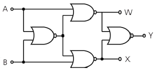
- 비교 회로
- 가산 회로
- 반일치 회로
- 감산 회로
(정답률: 84%)
37. 1500kW, 6000V, 60㎐의 3상 부하의 역률이 75%(뒤짐)이다. 이 때 이부하의 무효분은 약 몇 kVar인가?
- 1092
- 1278
- 1323
- 1754
(정답률: 54%)
38. 그림과 같은 회로에서 스위치 S를 닫을 때 t초 후의 R에 걸리는 전압은?
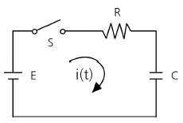
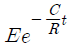
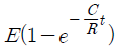
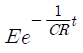
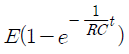
(정답률: 63%)
39. 그림과 같은 회로는 어떤 논리동작을 하는가? (단, A, B는 입력이며, F는 출력이다.)
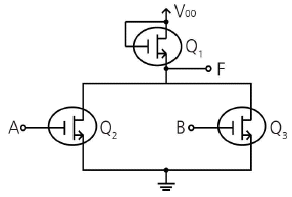
- NAND
- NOR
- AND
- OR
(정답률: 75%)
40. 직류 발전기의 극수가 10극이고, 전기자 도체수가 500, 단중 파권일 때 매극의 자속수가 0.01Wb이면 600rpm의 속도로 회전할 때의 기전력은 몇 V 인가?
- 200
- 250
- 300
- 350
(정답률: 72%)
3과목: 임의구분
41. 그림과 같은 논리회로의 논리함수는?
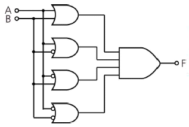
- 0
- 1
- A
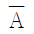
(정답률: 64%)
42. 전격살충기를 시설 할 경우 전격격자와 시설물 또는 식물 사이의 이격거리는 몇 ㎝ 이상 이어야 하는가?
- 10
- 20
- 30
- 40
(정답률: 83%)
43. 저압 연접인입선의 시설기준으로 옳은 것은?
- 옥내를 통과하여 시설할 것
- 폭 4m를 초과하는 도로를 횡단하지 말 것
- 지름은 최소 1.5mm2 이상의 경동선을 사용할 것
- 인입선에서 분기하는 점으로부터 100m를 초과하지 말 것
(정답률: 83%)
44. 소맥분, 전분, 기타의 가연성 분진이 존재하는 곳의 저압 옥내배선 공사방법으로 적합하지 않은 것은?
- 합성수지관 공사
- 금속관 공사
- 가요전선관 공사
- 케이블 공사
(정답률: 86%)
45. 3상 3선식 선로에서 수전단 전압 6.6kV, 역률 80%(지상), 600kVA의 3상 평형부하가 연결되어 있다. 선로의 임피던스 R=3Ω, X=4Ω인 경우 송전단 전압은 약 몇 V인가?
- 6852
- 6957
- 7037
- 7543
(정답률: 49%)
46. 다음 중 SCR에 대한 설명으로 가장 옳은 것은?
- 게이트 전류로 애노드 전류를 연속적으로 제어 할 수 있다.
- 쌍방향성 사이리스터이다.
- 게이트 전류를 차단하면 애노드 전류가 차단된다.
- 단락상태에서 애노드 전압을 0 또는 부(-)로 하면 차단상태로 된다.
(정답률: 82%)
47. 최대 사용전압이 7kV 이하인 발전기의 절연 내력을 시험하고자 한다. 최대사용전압의 몇 배의 전압으로 권선과 대지사이에 연속하여 몇 분간 가하여야 하는지 그 기준을 옳게 나타낸 것은?
- 1.5배, 10분
- 2배, 10분
- 1.5배, 1분
- 2배, 1분
(정답률: 78%)
48. 전력 원선도에서 구할 수 없는 것은?
- 조상용량
- 과도안정 극한전력
- 송전손실
- 정태안정 극한전력
(정답률: 84%)
49. 3상 유도 전동기의 제동방법 중 슬립의 범위를 1~2 사이로 하여 제동하는 방법은?
- 역상제동
- 직류제동
- 단상제동
- 회생제동
(정답률: 67%)
50. 방향 계전기의 기능에 대한 설명으로 옳은 것은?
- 예정된 시간지연을 가지고 응동(應動)하는 것을 목적으로 한 계전기이다.
- 계전기가 설치된 위치에서 보는 전기적 거리등을 판별해서 동작한다.
- 보호구간으로 유입하는 전류와 보호구간에서 유출되는 전류와의 벡터차와 출입하는 전류와의 관계비로 동작하는 계전기이다.
- 2개 이상의 벡터량 관계위치에서 동작하며 전류가 어느 방향으로 흐르는가를 판정하는 것을 목적으로 하는 계전기이다.
(정답률: 83%)
51. 나전선 상호 또는 나전선과 절연전선, 캡타이어 케이블 또는 케이블과 접속하는 경우의 설명으로 옳은 것은?
- 접속슬리브(스프리트슬리브 제외), 전선 접속기를 사용하여 접속하여야 한다.
- 접속부분의 절연은 전선 절연물의 80% 이상의 절연효력이 있는 것으로 피복하여야 한다.
- 접속부분의 전기저항을 증가시켜야 한다.
- 전선의 강도는 30%이상 감소하지 않아야 한다.
(정답률: 80%)
52. 출력 10kVA, 정격 전압에서 철손이 85W,뒤진 역률 0.8, 3/4부하에서 효율이 가장 큰 단상 변압기가 있다. 역률 1 일 때 최대 효율은 약 몇 %인가?
- 96.2
- 97.8
- 98.8
- 99.1
(정답률: 58%)
53. 총 설비용량 80kW, 수용률 60%, 부하율 75%인 부하의 평균전력은 몇 kW인가?
- 36
- 64
- 100
- 178
(정답률: 57%)
54. 3상 전파 정류회로에서 부하는 100Ω의 순저항 부하이고, 전원 전압은 3상 220V(선간전압), 60㎐이다. 평균 출력전압(V) 및 출력전류(A)는 각각 얼마인가?
- 149V, 1.49A
- 297V, 2.97A
- 381V, 3.81A
- 419V, 4.19A
(정답률: 65%)
55. 어떤 작업을 수행하는데 작업소요시간이 빠른 경우 5시간, 보통이면 8시간, 늦으면 12시간 걸린다고 예측 되었다면 3점 견적법에 의한 기대 시간치와 분산을 계산하면 약 얼마인가?
- te=8.0, б2=1.17
- te=8.2, б2=1.36
- te=8.3, б2=1.17
- te=8.3, б2=1.36
(정답률: 57%)
56. 계량값 관리도에 해당되는 것은?
- c관리도
- u관리도
- R관리도
- np관리도
(정답률: 73%)
57. 작업측정의 목적 중 틀린 것은?
- 작업개선
- 표준시간 설정
- 과업관리
- 요소작업 분할
(정답률: 57%)
58. 일반적으로 품질코스트 가운데 가장 큰 비율을 차지하는 것은?
- 평가코스트
- 실패코스트
- 예방코스트
- 검사코스트
(정답률: 86%)
59. 계수 규준형 샘플링 검사의 OC곡선에서 좋은 로트를 합격시키는 확률을 뜻하는 것은? (단, α는 제1종과오, β는 제2종과오이다.)
- α
- β
- 1-α
- 1-β
(정답률: 78%)
60. 정규분포에 관한 설명 중 틀린 것은?
- 일반적으로 평균치가 중앙값보다 크다.
- 평균을 중심으로 좌우대칭의 분포이다.
- 대체로 표준편차가 클수록 산포가 나쁘다고 본다.
- 평균치가 0이고 표준편차가 1인 정규분포를 표준정규분포라 한다.
(정답률: 73%)